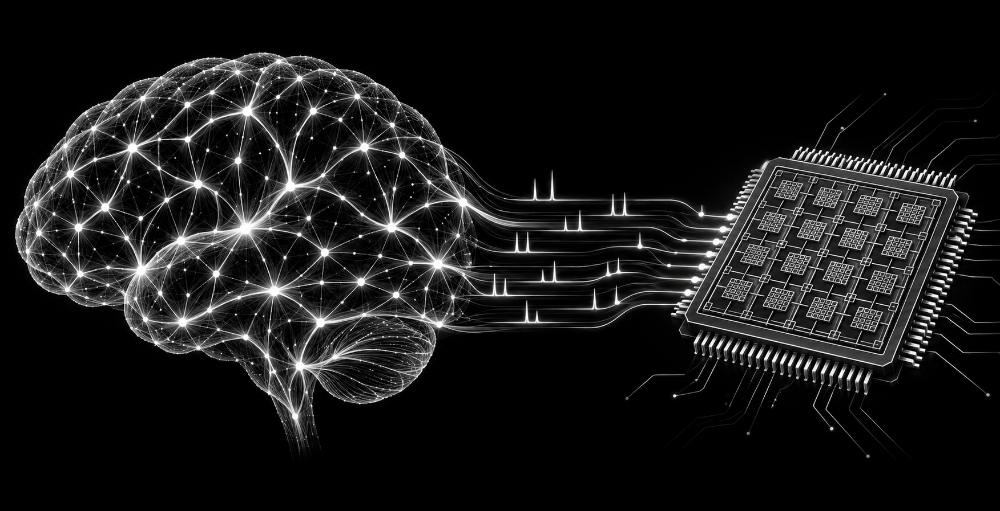

M.Sc. THESIS · COMPUTER ARCHITECTURE
Spikes, silicon,
and precision.
FPGA-Based Acceleration of Spiking Neural Networks Using the Posit Number System

A hardware-aware view of neural inference.
Spiking neural networks offer a brain-inspired computational model. This thesis investigates their FPGA implementation through a focus on low-precision numerical computation and the Posit number system.
The research brings together neural dynamics, reconfigurable hardware, and numerical representation to study practical paths toward efficient neural inference. It does not treat model design and implementation cost as separate problems.
Neural computation expressed through discrete spike events.
Reconfigurable hardware for tailored accelerator architectures.
A numerical representation explored for low-precision inference.
Hardware–software choices considered together.